Sixteen unforgettable challenges. One incredible culture.
Discover the food, cities, music, stars and dialects of Saudi Arabia.
Guest, you scored
Congratulations! Show this screen to the Saudi Club team to claim your prize.
Each photo is attached to the NAME shown below — not to a random question. Choose a picture, check the preview, then export your complete website.
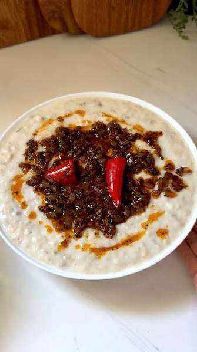
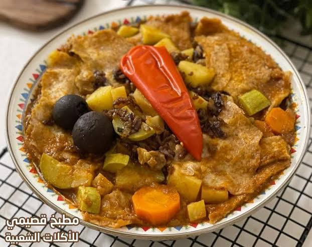
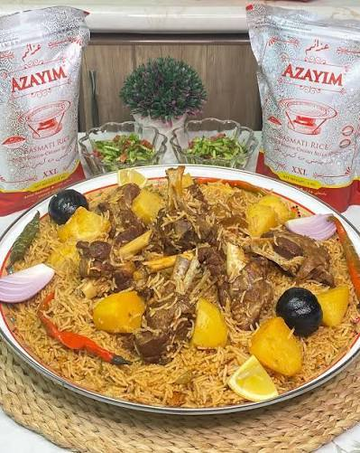
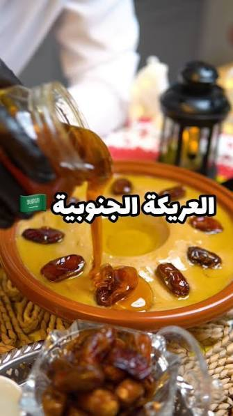
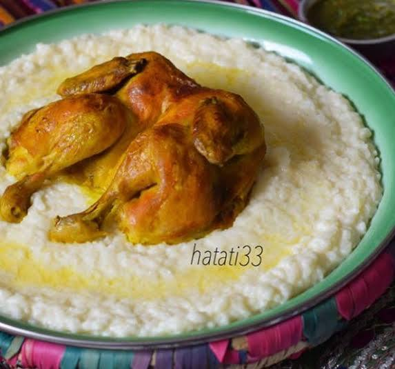
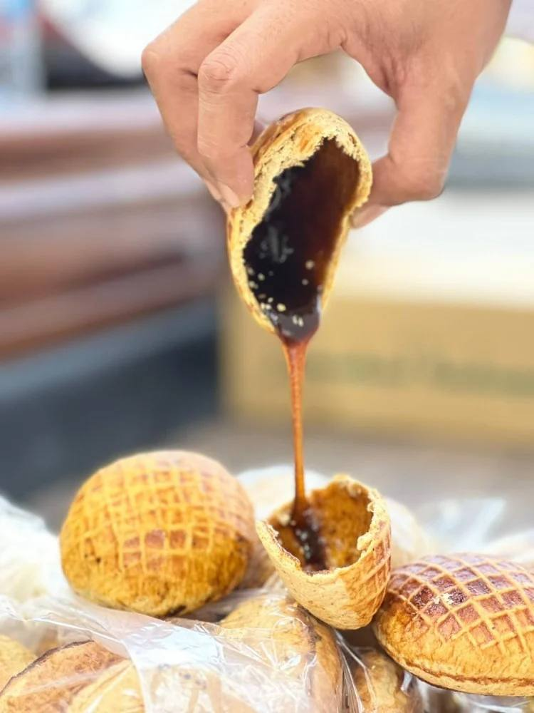
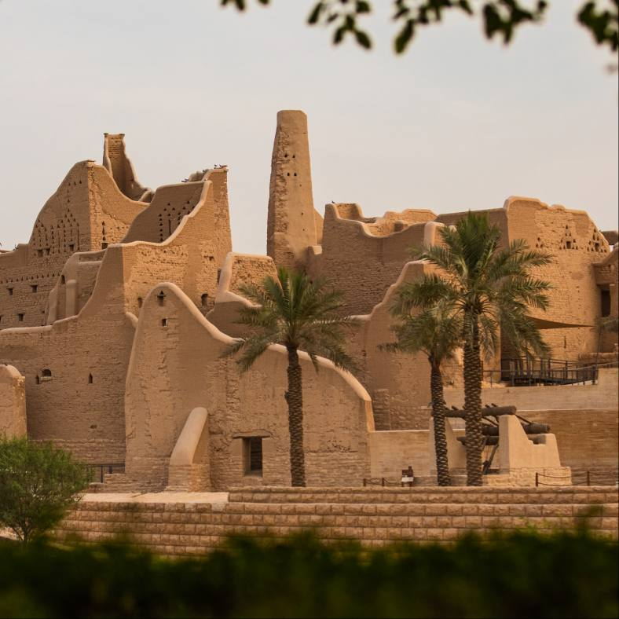
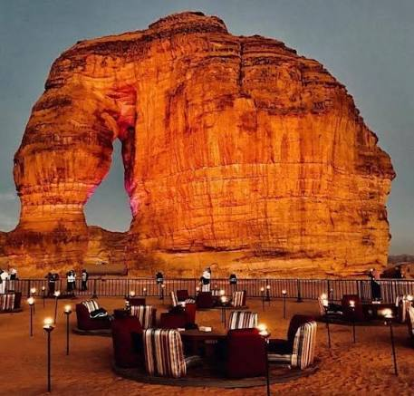
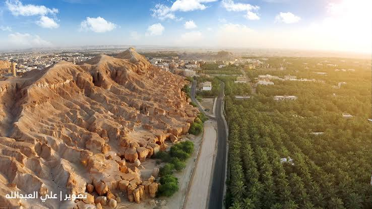
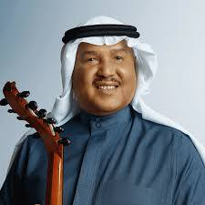
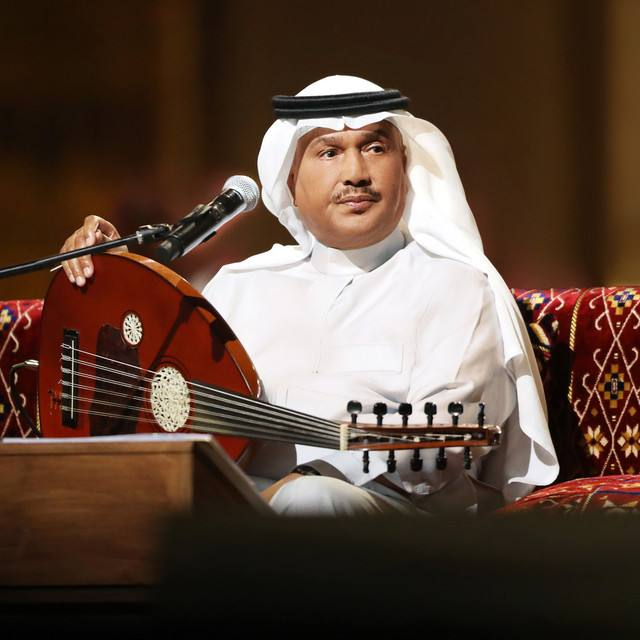
Top scores saved on this browser only.